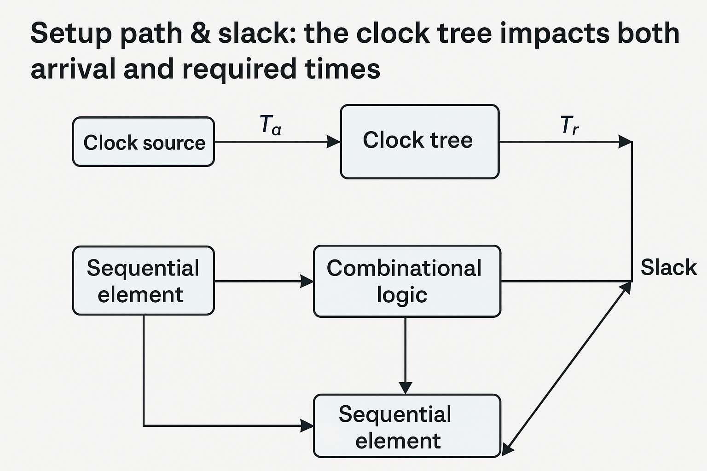

Introduction
Clock Tree Synthesis (CTS) distributes the clock from one or more sources to every sequential element while controlling skew (difference in arrival time between sinks) and insertion delay (latency from source to sink). A good clock tree keeps skew small, insertion delay reasonable, and jitter low—so timing closure is achievable.
CTS goals & definitions
- Skew: Δ between two sink arrival times. Lower skew → fewer false setup/hold issues.
- Insertion delay (latency): Time from clock source to sink pin. Keep balanced across the chip.
- Jitter: Edge arrival variation; budget in your SDC so STA is realistic.
- Power: Clock nets toggle every cycle—optimize buffers and wirelength.

Setup path & slack: the clock tree impacts both arrival and required times.
Topologies: H-tree vs clustering
H-tree
- Symmetric branching → naturally balanced paths → low skew.
- Works well for uniform sink distribution; can be wire-heavy for irregular layouts.
Clustered / balanced trees
- Group sinks spatially, build local subtrees, then connect to a trunk.
- Practical for real SoCs with macros and non-uniform placement.
Buffers, sizing & shielding
- Buffer set: Allow only clock-friendly cells (balanced rise/fall, low variation).
- Sizing: Keep slew under library max; upsize only where needed to limit power.
- Shielding: Route clock on higher metals with ground shields or double-spacing to reduce crosstalk.
- Gating: Use integrated clock gating cells (ICGs) for power domains; CTS must recognize them.
OpenROAD CTS flow (example)
Assuming your design is placed and you have Liberty/LEF ready, here is a compact OpenROAD recipe:
# 0) Prereqs: tech + libs + placed design
read_liberty sky130_fd_sc_hd__tt_025C_1v80.lib
read_lef sky130_fd_sc_hd.tlef
read_lef sky130_fd_sc_hd__merged.lef
read_def design_placed.def
link_design top
# 1) Define allowed clock buffers/inverters
set clk_bufs { sky130_fd_sc_hd__clkbuf_2 sky130_fd_sc_hd__clkbuf_4 sky130_fd_sc_hd__clkbuf_8 }
set clk_invs { sky130_fd_sc_hd__clkinv_2 sky130_fd_sc_hd__clkinv_4 }
# 2) Select sinks and root
create_clock -name core_clk -period 10 [get_ports clk]
set_propagated_clock [get_clocks core_clk]
# 3) CTS options (skew targets depend on frequency + PVT)
set cts::target_skew 0.08 # 80ps example
set cts::max_latency 1.8 # ns, example budget
# 4) Run CTS
set_dont_use sky130_fd_sc_hd__buf_* # avoid generic BUFs in clock
set_dont_use sky130_fd_sc_hd__inv_* # avoid generic INVs in clock
remove_dont_use $clk_bufs
remove_dont_use $clk_invs
clock_tree_synthesis \
-root_buf sky130_fd_sc_hd__clkbuf_8 \
-buf_list [join $clk_bufs " "] \
-inv_list [join $clk_invs " "] \
-sink_clustering_enable \
-balance_levels
# 5) Post-CTS legalization & opt
place_opt
repair_timing -setup
repair_timing -hold
write_def design_postcts.def
write_sdc design_postcts.sdc
write_verilog design_postcts.v
Tip: For multi-clock designs, run CTS per clock or ensure proper domains and generated clocks are modeled in SDC.
Verify with OpenSTA (setup & hold)
After CTS, re-run STA across PVT corners. Ensure clock is propagated and uncertainties are set.
read_liberty sky130_fd_sc_hd__tt_025C_1v80.lib
read_verilog design_postcts.v
read_sdc design_postcts.sdc
link_design top
# Use propagated clocks to model the built tree
set_propagated_clock [all_clocks]
report_clocks
report_clock_skew -setup
report_clock_skew -hold
report_checks -path_delay min_max -fields {slew capacitance transition} -digits 3 -group_count 10
Watch for:
- Skew histograms: narrow is good; outliers often indicate long detours or congestion.
- Hold violations: common after CTS; fix with local delay cells (don’t globally slow the clock).
- Setup regressions: rebuffering or tree depth might have increased insertion delay—optimize or re-cluster.
Useful skew & ECO tactics
- Useful skew: intentionally shift arrival to relax critical setup at the expense of neighboring paths.
- Local ECOs: targeted buffer upsizing/downsizing or inserting delay cells on specific branches.
- Retiming candidates: if the same path stays critical, consider micro-architecture or placement changes.
repair_timing -hold -effort high -max_buffer_percent 2
report_checks -path_delay min
Debug & common pitfalls
- Mismatched buffer lists: ensure allowed clock cells exist in your Liberty & LEF.
- Routing detours: force preferred layers or shielding for long trunks; reduce coupling.
- Over-constraining skew: ultra-tight targets can explode buffer count and power.
- Unmodeled jitter/uncertainty: leads to optimistic timing—set realistic margins in SDC.
- Gated domains: mark ICGs and generated clocks correctly, or CTS may skip sinks.
Sign-off checklist
- All clock sinks connected and recognized by STA.
- Skew & insertion delay within design targets; histograms inspected.
- Setup/hold met across MCMM corners; clock uncertainties applied.
- EM/IR and crosstalk risk acceptable on clock metals; shielding verified where needed.
- No DRC on clock nets; antenna rules satisfied.
FAQ
What’s a reasonable skew target? Depends on period & variation. For a 100 MHz design, ≈50–100 ps is a common starting point.
Do I run CTS before or after global routing? After placement (pre-route), then legalize/opt and proceed to route; recheck STA.
How do I handle multiple clocks? Build per clock domain, define generated clocks, and isolate constraints for clarity.
You might also like